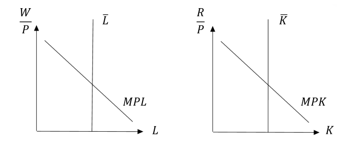
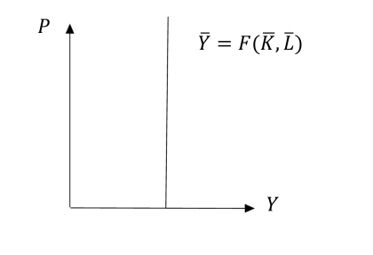

1 2024年3月1日
作者：李惟简
1.1 经济学思想基础
经济学是社会科学中研究人类理性的边际决策的学科。理性不仅是假设，更是经济学研究的前提，非理性的决策归于心理学的研究范畴。边际指理性人针对增量的变化开展决策，而非存量。经济学的哲学基础是客观唯心主义，研究者相信均衡的潜在力量影响人类决策，进而推动经济系统的运行。
1.1.1 经济系统
经济学构建的是由变量和等式描述的均衡系统。
经济学研究的变量从变化来源看分为内生变量和外生变量。内生变量是系统需要研究的变量，外生变量是给定系统的条件。
例： 在供需模型中，均衡数量和价格是内生变量，其他变量是外生的。
经济学研究的变量从变化属性看分为流量和存量。流量是一段时间内的经济系统特征的变化量，存量是一个时点上经济系统的状态。
例：失业率和失业人数是存量，新增失业人口是流量。
经济学研究的等式系统来自优化问题。经济决策主体基于给定的约束条件作出优化决策，决策结果和约束条件呈现为等式系统。经济学的等式系统分为均衡式和恒等式。均衡式来自经济系统参与者的决策，恒等式是经济叙述的等价表述。
例： 供需均衡是均衡式，净出口等于出口减进口是恒等式。
1.1.2 分析方法
经济学的分析方法包括实证分析和规范分析。实证分析研究经济系统内生变量与外生变量的均衡关系，规范分析研究对内生变量表现的价值取向。本门课程研究的每部分内容均是实证分析，一般来说，规范分析应该作为实证分析的前提条件，在确认价值取向后只应涉及实证分析。
例： 代议制民主是否正义是规范分析，如何提高代议制民主效率是实证分析。
1.1.3 研究结论
经济学的研究结论呈现为相关关系与因果关系。相关关系仅由统计观察即可得到，因果关系应该来自均衡机制的分析。
例： 气温升高导致游泳人数上升是因果关系，冷饮消费量上升和游泳人数上升同向变动是相关关系。
1.2 宏观经济学研究框架
宏观经济学是研究经济系统总量波动和增长的学科。
宏观经济学是经济科学的重要领域，经济学的一切思想和方法均在宏观经济学中适用。经济学的基础思想是微观经济学的优化、供需与边际理论，宏观系统亦由微观个体聚合而成。但是微观变量加总至宏观并非简单的线性加权累加，这是尤需注意的。
例：微观供给量随物价上升。但物价不影响宏观长期均衡的总供给量。
1.2.1 古典主义：长期均衡
古典主义经济学研究总量在经济系统长期达到的均衡状态。长期均衡由价格引导下的无套利机制实现，即市场上的供给方和需求方根据价格做出反应，调整供给量和需求量，使总量达到均衡。因此长期的定义是所有变量都能自由调整需要的最短时间。长期物价反映的是商品交换的比例关系，因此物价总水平不影响实际变量。实际变量由生产能力的物理约束决定。
1.2.2 古典主义：超长期增长
古典主义视角下经济系统的生产能力在超长期逐渐提高，从而带来实际变量的系统性变化。这一系统性变化成为经济增长，是宏观研究的重要领域。
1.2.3 凯恩斯主义：短期波动
凯恩斯主义关注短期经济的波动，短期的定义是部分变量存在粘性，不能自由调节的时期。部分变量的粘性导致市场不能通过均衡机制的灵活调节保持均衡状态，出现对均衡的偏离。从短期向长期变化的过程是粘性变量的粘性逐渐消失的过程，伴随着均衡的恢复。均衡的偏离和恢复称为经济波动，是宏观研究的另一个重要领域
1.3 GDP：国内生产总值
现代文明认为发展的最终目标是提高人民的生活水平。人民的生活水平体现在运用生产所得带来的幸福，即经济效用。衡量一个经济体给其成员带来总经济效用的研究叫做国民财富核算，该研究主要使用国内生产总值来核算国民财富。
因此，国内生产总值的定义和国民财富总量息息相关。国内生产总值的定义是，一定时期内一国或一地区内新增生产的最终生产品以市场价值计价的总量。关于该定义需要注意以下方面：
- 一定时期： GDP是流量概念。
- 一国或一地区内： 地理概念。区别于GNP，其乃一国国民产量之总和。
- 新增生产： 物质的增加值才形成生活水平的提升。
- 最终产品： 未完成的商品计入存货，完成时应从存货消去。
- 市场价值： 市场价值才能体现效用水平，GDP不适用于计划经济。
1.3.1 GDP的测算
经济系统的每一个组成成员，同时既是生产者也是消费者。一单位商品生产出来后，必是流向了消费者，形成了消费者的支出。该商品的生产者获得了收入，可以支出到其他商品中。由上述逻辑可以得到三种等价的GDP核算方法：
- 生产法： 生产出的增加值总额。是中国最常用的核算法，脱胎于计划经济的计划生产管理，我国的增值税制度亦基于此。
- 支出法： 各部门支出总额。是西方常用的核算法，适用于分解经济增长来源。
- 收入法： 各部门收入总额。统计粗疏，常用于研究分配。
1.3.2 GDP的分解
支出法视角下的GDP可以分解为消费、投资、政府购买和净出口四部分。 体现为以下均衡式（该式永远成立）： Y = C + I + G + NX - 消费(C): 包括非耐久品、耐久品和服务。其中耐久品房产属于投资，购买二手商品不计入消费。 - 投资(I): 包括房地产、基建、固定资产投资和存货。其中房租和利润不属于生产，存货变动较大，为研究者所重视。 - 政府购买(G): 不包括转移支付。 - 净出口(NX): 减去进口是因为该部分已被包含在消费。
1.4 物价水平
物价水平直接决定了经济系统成员的购买能力，因此是受到密切关注的宏观变量。此外统计观察到的经济变量包含了物价的变化，称为。只有剔除掉价格变化后的，才能更准确地反映出和经济系统成员效用相关的因素变化。综上，宏观经济研究需要区分名义变量和实际变量，并估算物价水平。
1.4.1 GDP平减指数
第一种物价水平变动的计算方式是GDP平减指数，是名义GDP和实际GDP的比值。其中名义GDP就是以当期物价计算的当期总产出，实际GDP是以基期物价计算的当期总产出。 GDP\text{平减指数} = \frac{\text{当期所有商品} \times \text{当期价格水平}}{\text{当期所有商品} \times \text{基期价格水平}} \times 100\% - GDP平减指数只包括国内的产品，进口不属于GDP平减指数。 - GDP平减指数会低估物价上升。因为没有考虑基期商品的适应性调整。
1.4.2 消费者价格指数
第二种物价水平变动的计算方式是，是统计局认定的构成普遍消费者消费习惯的一篮子商品，在当前期和基期的价格之比。
CPI=\frac{\sum \text{一篮子商品} \times \text{当期价格水平}}{\sum \text{一篮子商品} \times \text{基期价格水平}} \times 100\%
- CPI的一篮子商品只包括消费部分的代表性商品，不包括投资和政府购买。 - CPI会高估物价上升。因为没有考虑当前期商品的适应性调整，也没有考虑质量改进。
1.5 长期产出的来源
经济体的长期产出由要素的投入量所决定，所谓积水成渊也。现实中常关注的要素投入包括资本(K)和劳动(L),总产出(Y)可以表示为 Y=F(K,L) 其中生产函数F(K,L)代表技术如何将资本和劳动投入组织起来。
宏观研究中常用一类的生产函数有规模报酬不变(Constant Returns to Scale)的性质，即:
F(zK,zL) = zF(K,L) \forall z>0
规模报酬不变的生产函数中最常用的是柯布-道格拉斯(Cobb–Douglas)生产函数：
Y = AK^{\alpha}L^{1-\alpha}
其中劳动的边际产值MPL，来自对L求偏导：
MPL = \frac{\partial AK^{\alpha}L^{1-\alpha}}{\partial L} = A(1-\alpha)K^{\alpha}L^{-\alpha}
竞争性市场条件下，劳动的边际产值等于实际工资，于是可以得到劳动报酬占总产出比重始终是固定值：
\frac{WL}{P}/Y=\frac{\partial A(1-\alpha)K^{\alpha}L^{1-\alpha}}{\partial L} /AK^{\alpha}L^{1-\alpha} = 1-\alpha
同理，可以得到 \frac{KL}{P}/Y=\alpha, 以及 PY = RK + WL。基于以上分析，柯布-道格拉斯生产函数在竞争性市场条件下，有如下优良性质：
- 产出可以被资本和劳动按照固定比例划分。
- 企业经济利润为零，不会无限扩张。
- 固定比例的划分符合历史数据呈现的趋势，资本和劳动收入所占比重保持不变。
由MPL和MPK边际递减的特性，可以画出向下倾斜的长期资本市场和劳动力市场需求曲线，和长期垂直的资本和劳动力供给曲线：

于是长期的总产出是定值，体现为垂直的长期总供给曲线：
